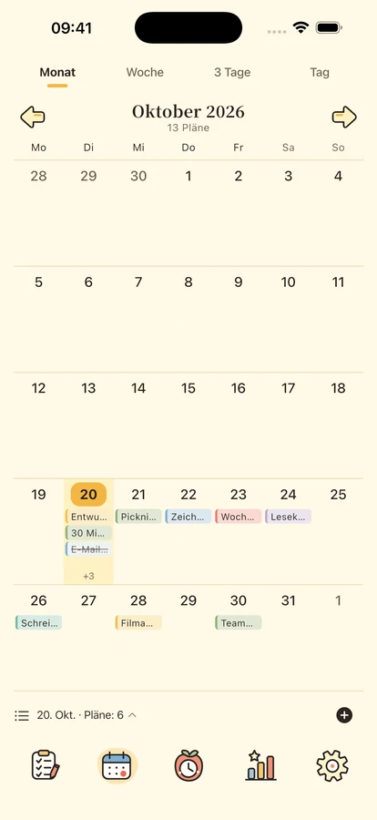
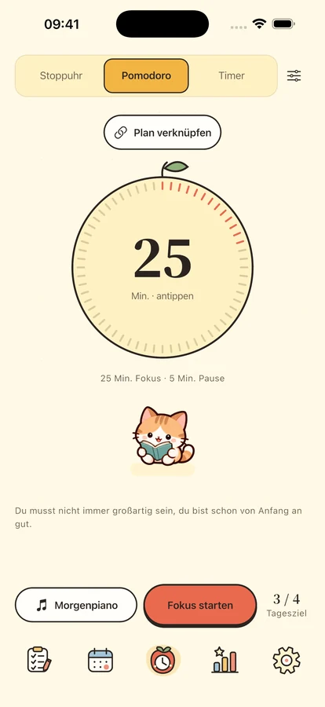
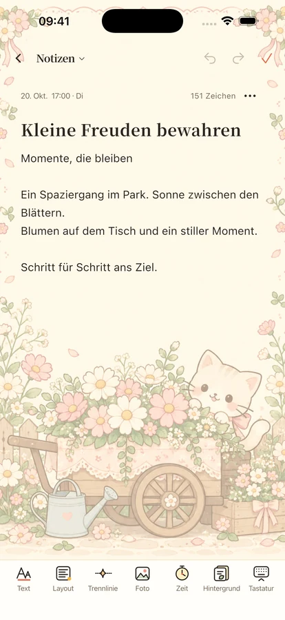

Etwas Ruhe.
Etwas Gesellschaft.
Ordne deine Pläne, konzentriere dich auf eine Sache und bewahre Ideen und besondere Tage an einem Ort.
Für iPhone und iPad · Veröffentlichung in Vorbereitung

Eine Sache nach der anderen.
Mit einem kleinen Schritt anfangen
Platz für deine Pläne, deine Zeit und etwas Zuversicht.

Jeder Plan an seinem Platz.
Vier Quadranten trennen Wichtiges von Dringendem. Zeitleiste und Tages-, Wochen- und Monatskalender zeigen deine Termine. Mit Wiederholungen, Teilaufgaben und lokalen Erinnerungen.
Zeit für die eine Sache.
Pomodoro, Countdown oder Stoppuhr mit 8 Offline-Musikstücken und 11 Umgebungsgeräuschen. Vier Begleiter und eine Klappuhr helfen bei Fokus und Pause. Alle Klänge gibt es mit Plus oder im dreitägigen Test; ein Musikstück, ein Umgebungsgeräusch und Stille bleiben kostenlos.



Gedanken und besondere Tage bewahren.
Gestalte Notizen mit Textformatierung, Fotos und Briefpapier und finde sie nach Datum oder Kategorie. Zähle bis zu Geburtstagen und Jahrestagen. Widgets für Pläne, Kalender, Fokus, Ereignisse und Notizen brauchen iOS 17 oder neuer.
Dein Alltag gehört dir.
Lokale Funktionen brauchen keine Anmeldung. Cloud-Backups startest du selbst; Nutzungsanalyse ist zunächst aus. Du kannst Daten exportieren, Datenschutzauswahl ändern und dein Konto löschen.
Datenschutz